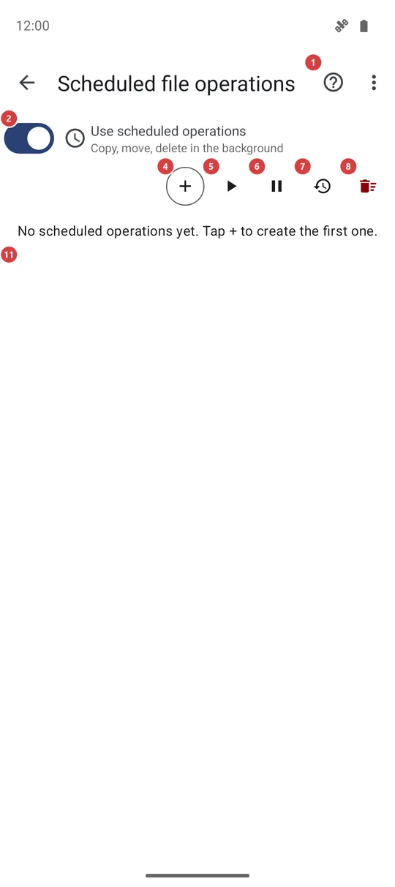
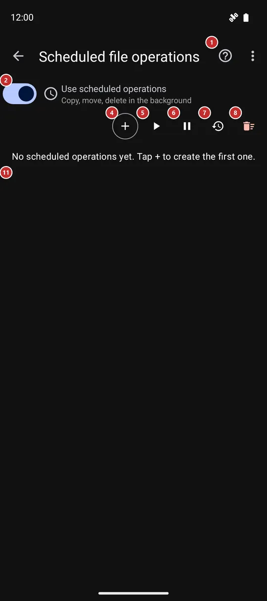

Scheduled file operations
What this is for
Scheduled file operations copy, move, archive or delete files in the background at the times you set - for example, moving new camera photos to a network folder every night. This screen switches the feature on, lists your operations and shows how every run went.


In this order
- Turn on Use scheduled operations 2. On Android 13 and later, press the notifications button 3 if it shows up, so you can see when a run starts or fails.
- Press Add 4 and describe the job once: the source, the operation, the destination, which files to take, when to start and how often. Try a new job as Copy before you trust it with Move or Delete.
- Find the new card in the list 11. Its own switch 12 holds just that job without deleting it.
- Not sure it works? Press Run now 15 on the card, then open its History 14 to see what was done.
- A warning mark 13 means the last run failed or was skipped. History 7 shows the log of all runs, the card's History 14 the runs of one job.
- To hold everything for a while use Pause all 6. Run all now 5 starts every enabled job once, outside the schedule.
- Edit 16 changes a job, Delete 17 removes one, and Clear all 8 removes them all. Clear log 10 empties the run history and leaves the jobs alone.
The elements
Switch and help
1HelpOpens help for this screen.
You get what each button does and the usual order of use, with numbers matching the markers on the screenshot.
2Use scheduled operationsTurns scheduled runs on or off for the whole program.
While it is on, your operations run at their times, even when the app is closed. While it is off, nothing runs on schedule and the buttons and the list are hidden, but every operation stays saved. The switch also follows the list: it turns itself off when you delete the last operation and on again when you add one.
- Undo
- Nothing is lost. The operations stay saved, and switching it on queues their runs again.
3Allow notifications for scheduled operationsLets scheduled runs show their notifications.
The button appears on Android 13 and later while the notification permission is missing, and goes away once you allow it. A run shows a notification while it works and when it fails, so without the permission you would notice neither. Tap it and answer the system question. The warning mark on an operation card shows a failed run either way.
Action bar
4AddCreates a new scheduled operation.
A form opens where you describe the job once. Source is one of your resources or any folder on the device. Operation is Copy, Move, Archive or Delete, and everything except Delete also asks for a Destination. Then pick the file types, optionally a time filter such as only files that are new since the last run, extra limits by name, age or size, the start time and how often to repeat (at least every 15 minutes). A read-only source allows Copy only. Save operation puts the new card in the list.
When you arrive from the file browser, the form opens with the folder you were in already set as the source. Move and Delete remove the original files in the background, which on some devices needs access to all files; the app tells you in a notification when it is missing.
Show on watch is the last operation in the list, in app versions that work with a watch. It needs no source or destination: you enter a title, an optional text and, if you like, one picture, and at every slot the paired watch shows it as a notification. A tap on the notification opens the picture on the watch. A watch that is out of reach or a switched-off Wear Companion makes the run skipped, not failed, and the next slot sends it again.
5Run all nowStarts every enabled operation once, right now.
The jobs run one after another and the regular schedule goes on as before. Operations whose own switch is off are skipped, and nothing happens while Pause all is active. There is no extra question, so make sure a Move or Delete job is really ready before you press it.
- Undo
- Files that a run copied, moved or deleted stay that way. A scheduled Delete does not use the trash - what it removes is gone for good.
6Pause allHolds all schedules, or lets them go on.
While the schedules are paused the button reads Resume all. Pausing keeps every operation and its settings, makes Run all now do nothing, and keeps the app from queuing the schedules again after a restart. Resume all lifts the pause. To hold a single job, use the switch on its card.
7HistoryShows or hides the log of all runs.
The Run history panel opens under the buttons with the newest runs first: when each run happened, which operation it was, from where to where, and what came of it. Failures are shown in the error color. Press the button again to hide the panel.
8Clear allRemoves every scheduled operation at once.
The app asks Clear all scheduled operations? first. After you confirm, all operations are deleted and their schedules cancelled. Your files are not touched, and the log in the Run history panel stays. With the list empty, the main switch turns itself off.
- Undo
- The operations and their settings are lost and cannot be restored - create them again with Add. Files that earlier runs already copied, moved or deleted stay as they are.
Run history
9Run historyThe log of recent runs, newest first.
Each entry shows the time, the operation, the source and the destination, and a short message. The panel keeps the last 200 entries in view. Until a run is recorded it says No runs recorded yet. It is one list for all operations; for one operation use the History button on its card.
10Clear logEmpties the log of all runs.
The app asks Clear the run history? first. After you confirm, the list is empty and fills up again with the next runs. Operations and schedules are not affected, and the runs shown by the card History buttons are kept.
- Undo
- The deleted log entries cannot be brought back. Only the entries are lost; nothing else changes.
Operation list
11Operation listOne card for each scheduled operation.
A card shows the source and, except for Delete, the destination, with an icon for the operation. Below are the schedule (for example At 23:00 · Every 24h), which files it takes, and when it last succeeded or that no run has succeeded yet. A source or destination that was removed from the app is shown as (deleted). While the list is empty it says No scheduled operations yet. Tap + to create the first one.
12Enable/disable scheduled operationHolds or resumes this one operation.
Off, the operation keeps its card and settings but its waiting run is cancelled. On, it is queued for its next time again. The other operations are not affected.
13Warning markTells you the last run of this operation did not finish.
It appears after a run that did not finish. A failed run shows a red mark with an exclamation sign; a skipped run, for example because the source or the destination could not be reached, shows a grey information mark. Tap or press and hold the mark to see why the last run did not finish; its History button opens the earlier runs. A skipped run is tried again at the next time. The mark stays until a run succeeds.
14HistoryShows the recent runs of this operation only.
A window lists the runs of this one job, newest first: when each ran, how many files it handled and why it stopped, if it did. Close it with Close. The runs go away together with the operation.
15Run nowStarts this operation once, right now.
Use it to try a new job or to catch up without waiting for the next time. The regular schedule is not changed. When it is done, the result appears in History.
- Undo
- The same as for any run: copied, moved or deleted files stay that way, and Delete is permanent.
16EditChanges the source, destination, files or times of this operation.
The same form as Add opens with the current settings. Save operation keeps your changes; closing the form without saving leaves the operation as it was.
17DeleteRemoves this operation.
The app asks Delete this scheduled operation? first. After you confirm, the operation and its schedule are removed, together with its own run list and a folder that was chosen only for this job. Your files are not touched.
- Undo
- The operation cannot be restored - create it again with Add. Files that earlier runs already copied, moved or deleted stay as they are.
Top bar menu
18About schedules for other devicesOpens a web page about schedules that work with folders of other devices.
The item is in the three-dots menu of the top bar. It opens a page of the product website in your browser, so it needs an internet connection; the app tells you if the phone is offline or has no browser. The page explains how a schedule can take files from, or put them into, a folder on another device.